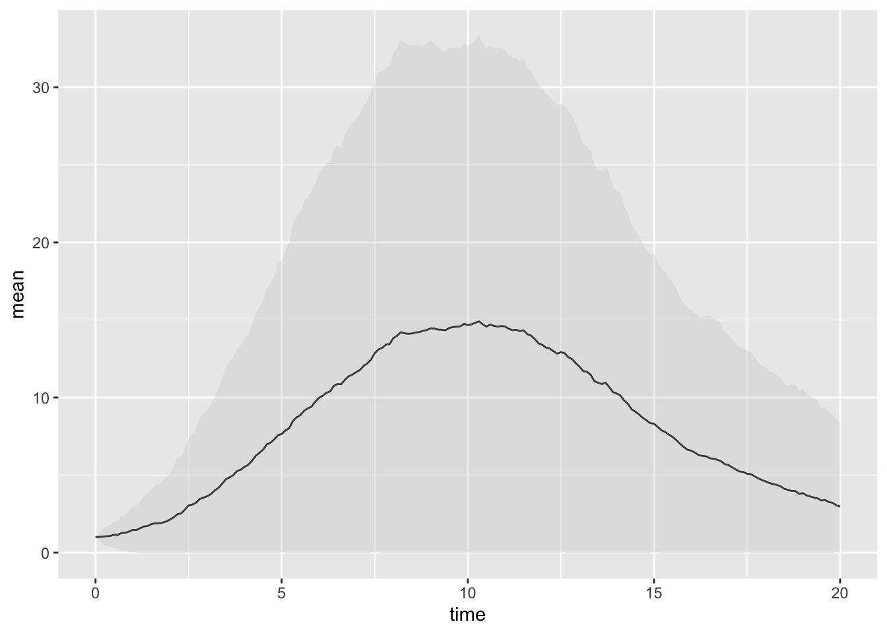
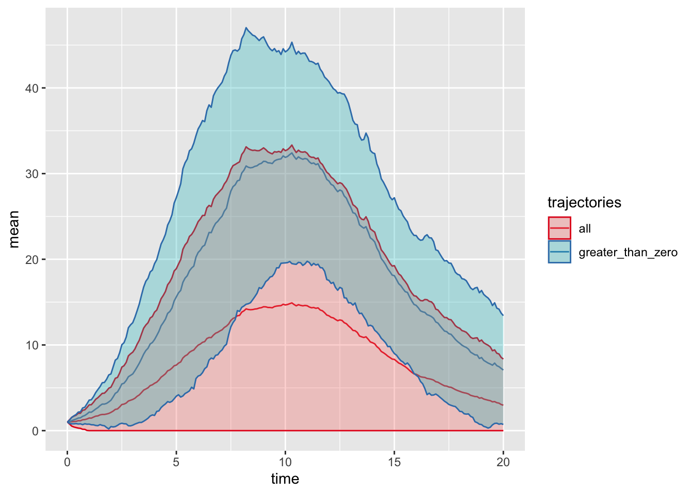

library(ggplot2) ## for plotting
library(dplyr) ## for manipulation of results
library(tidyr) ## for storing multiple simulation runs in a data frame
## Function SIR_gillespie.
## This takes three arguments:
## - init_state: the initial state
## (a named vector containing the number in S, I and R)
## - parms: the parameters
## (a named vector containing the rates beta and gamma)
## - tf: the end time
SIR_gillespie <- function(init_state, parms, tf) {
time <- 0 ## initialise time to 0
## assign parameters to easy-access variables
beta <- parms[["beta"]]
gamma <- parms[["gamma"]]
## assign states to easy-access variables
S <- init_state[["S"]]
I <- init_state[["I"]]
R <- init_state[["R"]]
N <- S + I + R
## create results data frame
results_df <- data.frame(time = 0, t(init_state))
## loop until end time is reached
while (time < tf) {
## update current rates
rates <- c(
infection = beta * S * I / N,
recovery = gamma * I
)
if (sum(rates) > 0) { ## check if any event can happen
## time of next event
time <- time + rexp(n = 1, rate = sum(rates))
## check if next event is supposed to happen before end time
if (time <= tf) {
## determine the type of the next
next_event <- sample(x = length(rates), size = 1, prob = rates)
## change to name
next_event <- names(rates)[next_event]
## determine type of next event
if (next_event == "infection") {
## infection
S <- S - 1
I <- I + 1
} else if (next_event == "recovery") {
## recovery
I <- I - 1
R <- R + 1
}
} else { ## next event happens after end time
time <- tf
}
} else { ## no event can happen - go straight to end time
time <- tf
}
## add new row to results data frame
results_df <- rbind(results_df, c(time = time, S = S, I = I, R = R))
}
## return results data frame
return(results_df)
}10. Stochastic continuous models
In this practical, we will implement a continuous-time, stochastic compartmental model of influenza transmission using the Gillespie algorithm.
Practical 1. Stochastic simulation with the Gillespie algorithm
In this practical session, we will simulate the SIR model using the Gillespie algorithm.
Setting up the model algorithm
The first bit of code below is a function that simulates an SIR model using the Gillespie algorithm.
Take 10 minutes to familiarise yourself with the SIR_gillespie() function and make sure you understand its inner workings.
Now, run the SIR_gillespie() function using the commands below.
init.values <- c(S = 249, I = 1, R = 0) ## initial state
parms <- c(beta = 1, gamma = 0.5) ## parameter vector
tmax <- 20 ## end time
## run Gillespie simulation
r <- SIR_gillespie(init_state = init.values, parms = parms, tf = tmax)The data frame r now contains the results of the simulation.
Exercise 1
Inspect the contents of the data frame and write some code to plot the results; you can use plot or ggplot for this. Run the simulation and plot the results multiple times to convince yourself the output is different every time.
Summarising multiple stochastic runs
Next, we’ll run multiple simulations at once.
## Run multiple simulation runs and plot a few of them
nsim <- 100 ## number of trial simulations
traj <- tibble(i = 1:nsim) %>%
rowwise() %>%
mutate(trajectory = list(as.data.frame(
SIR_gillespie(init.values, parms, tmax)))) %>%
unnest(trajectory)
## convert to long data frame
mlr <- traj %>%
gather(compartment, value, 3:ncol(.))The code above runs the simulation 100 times and stores the resulting model trajectories in a data frame, traj, which contains the results from multiple simulation runs and an additional column that represents the simulation index.
Exercise 2
Write some code to plot the multiple simulation runs on the same plot.
You’ll notice that some outbreaks die out very quickly, while some others grow to affect large parts of the population.
Exercise 3
Plot the distribution of overall outbreak sizes. What proportion of outbreaks dies out quickly?
Next, we calculate the mean and standard deviation of each state across the multiple runs. To do that, we need the value of the different states at pre-defined time steps, whereas SIR_gillespie only returns the times at which certain events happened. In order to, for example, extract the values of the trajectory at integer time points, we can use the following:
## Extract the values of the trajectory at integer time points
timeTraj <- mlr %>%
group_by(i, compartment) %>%
summarise(traj = list(data.frame(
time = seq(0, tmax, by = 0.1),
value = approx(x = time, y = value, xout = seq(0, tmax, by = 0.1),
method="constant")$y))) %>%
unnest(traj)Now, we calculate a summary trajectory containing the mean and standard deviation (sd) of the number of infectious people at every time step:
## Calculate summary trajectory with mean & sd of infectious people over time
sumTraj <- timeTraj %>%
filter(compartment == "I") %>%
group_by(time) %>%
summarise(mean = mean(value),
sd = sd(value))
## plot
ggplot(sumTraj, aes(x = time, y = mean, ymin = pmax(0, mean-sd), ymax = mean+sd)) +
geom_line() +
geom_ribbon(alpha = 0.3)
Your plot should look something like the above.
As a second summary, we can also consider only trajectories that have not gone extinct, that is, where \(I>0\):
## Only consider trajectories that have not gone extinct:
sumTrajAll <- sumTraj %>%
mutate(trajectories="all")
sumTrajGr0 <- timeTraj %>%
filter(compartment == "I", value > 0) %>%
group_by(time) %>%
summarise(mean = mean(value),
sd = sd(value)) %>%
mutate(trajectories="greater_than_zero")
iTraj <- bind_rows(sumTrajAll, sumTrajGr0)
## plot
ggplot(iTraj, aes(x = time, y = mean, ymin = pmax(0, mean-sd), ymax = mean+sd,
colour = trajectories, fill = trajectories)) +
geom_line() +
geom_ribbon(alpha = 0.3) +
scale_color_brewer(palette="Set1")
Exercise 4
We have plotted the mean \(\pm\) standard deviation; is this a reasonable summary statistic? What else could one plot? Implement your own plot of trajectory plus uncertainty.
Comparing the stochastic model to the equivalent deterministic ODE model
We will now compare the stochastic model runs and their averages to the equivalent deterministic ODE model trajectory.
Exercise 5
Using code from the ODE practical, load the deSolve package, define the model function (e.g. SIR_model from the ODE practical), run the model with the same parameters as the Gillespie model, and store the output in a data frame called ode_output (remember, you need to convert the matrix returned by deSolve’s ode() to a data frame using as.data.frame()).
You can then plot both the stochastic and deterministic model runs using the following code:
## Combine into one big data frame
allTraj <- ode_output %>%
gather(compartment, value, 2:ncol(.)) %>% ## convert to long format
filter(compartment == "I") %>%
rename(mean = value) %>% ## in deterministic, mean = value
mutate(trajectories="deterministic", ## label trajectories
sd = 0) %>% ## in deterministic, sd = 0
bind_rows(iTraj)
## plot
ggplot(allTraj, aes(x = time, y = mean, colour = trajectories)) +
geom_line() +
scale_color_brewer(palette="Set1")
Exercise 6
Compare the deterministic trajectory to some of the individual stochastic trajectories and to their mean. Does the deterministic trajectory capture “typical” behaviour of the stochastic trajectories?
Exercise 7
Repeat the experiment with different values of the parameters. When does deterministic vs stochastic make more or less of a difference?
Exercise 8
Rewrite the model code to be an SEIR model. How do the results differ?
Practical 2. The adaptivetau package
In this practical session, we will use the adaptivetau package to run simulations. Start in a new file by loading the required packages:
library(adaptivetau) ## for stochastic simulationsFor adaptivetau, we first need to define the “transitions”, or events that can happen in the model. In the SIR model, these are:
## Define transitions
transitions <- list(
c(S = -1, I = +1),
c(I = -1, R = +1))We then need to specify a rate function:
## Specify rate function, giving rate for each transition
SIRrateF <- function(state, parms, time) {
beta <- parms[["beta"]]
gamma <- parms[["gamma"]]
S <- state[["S"]]
I <- state[["I"]]
R <- state[["R"]]
N <- S + I + R
rates <- c(beta * S * I/N,
gamma * I)
return(rates)
}We then define our initial conditions and parameters:
## Initial values
init.values <- c(S = 249, ## number of susceptibles
I = 10, ## number infectious
R = 0) ## number immune
## Parameters
parms <- c(beta = 2, ## infection rate
gamma = 1) ## recovery rateNow we will use the ssa.adaptivetau() function to run the model and plot the results.
## Run a trial simulation for 60 time steps
tmax <- 60 ## number of time steps to simulate
r <- ssa.adaptivetau(init.values, transitions, SIRrateF, parms, tf = tmax)
## Plot results
r_df <- as.data.frame(r)
plot(r_df$time, r_df$I, type = "l")Run the above multiple times – as before, the results should change every time.
We will now again run multiple simulations and store them in a data frame, traj, which contains multiple simulation runs and an additional column i that represents the simulation id:
## Run the simulation multiple times
nsim <- 100 ## number of trial simulations
traj <- tibble(i = 1:nsim) %>%
rowwise() %>%
mutate(trajectory = list(as.data.frame(
ssa.adaptivetau(init.values, transitions, SIRrateF, parms, tf = tmax)))) %>%
unnest(trajectory)
## Plot the resulting trajectories
ggplot(traj) +
geom_line(aes(x = time, y = I, group = i, colour = i))
Exercise 1
Compare the run time of the command above to running 100 simulations using our Gillespie algorithm from Practical 1. How much is the speed gain?
Solutions to this practical can be accessed here.